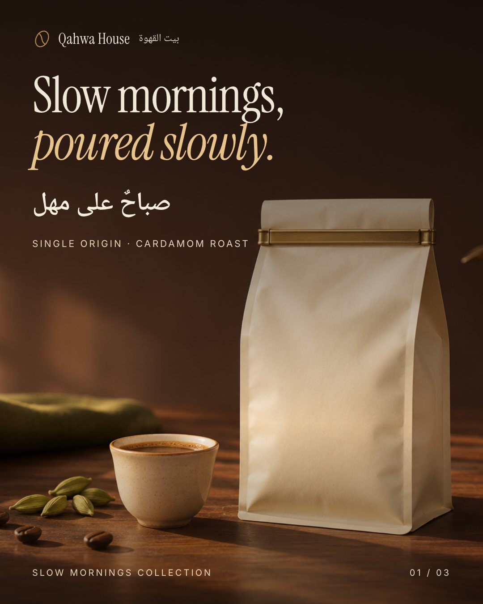
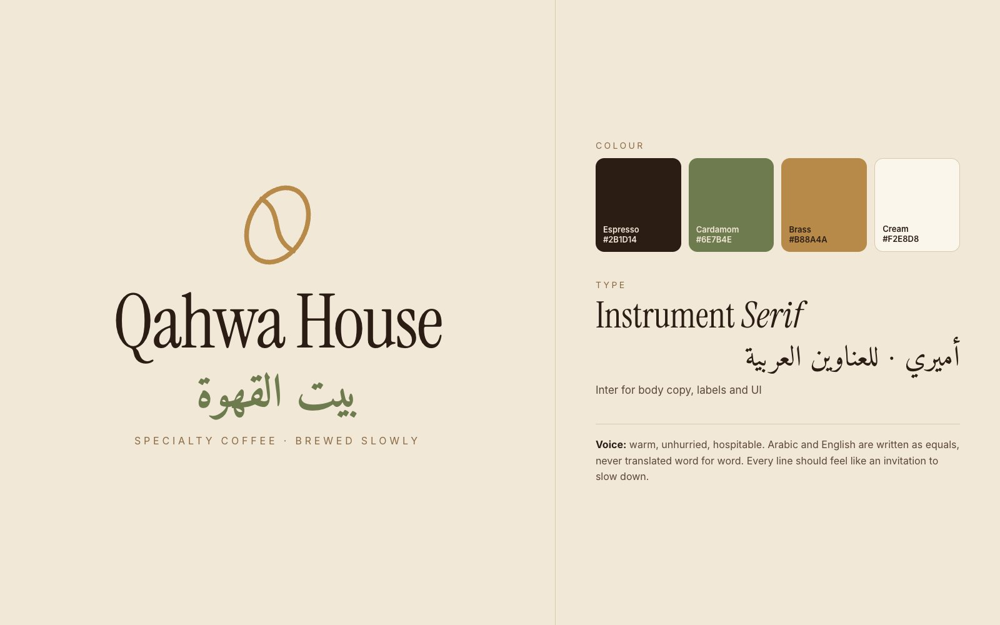
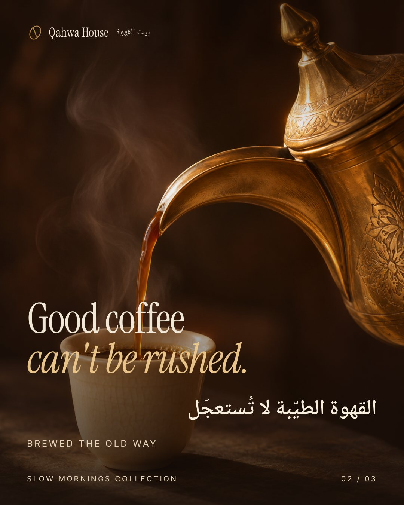
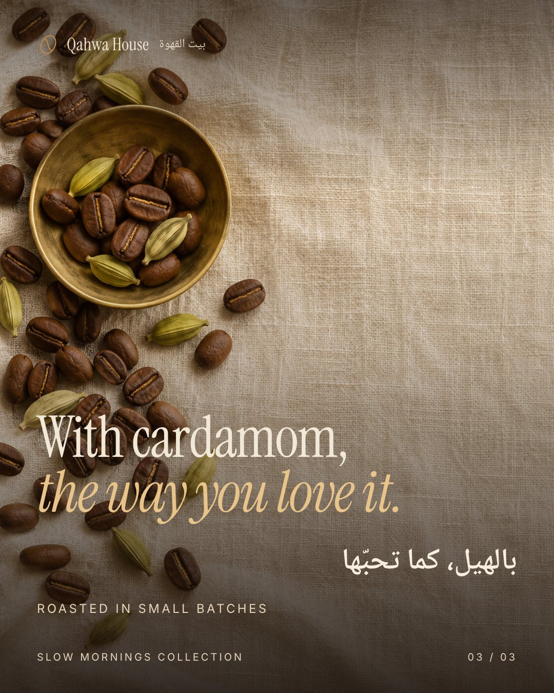

( Exhibit I · Brand identity & launch campaign )
Qahwa House
Slow mornings.
بيت القهوة

The brief
A specialty coffee brand that wants to feel modern without losing the ritual of Arabic coffee. The launch needs to work for two audiences at once: people who read in Arabic first and people who read in English first.
The approach
- 01
One idea, two languages
The campaign line "Slow mornings" was written natively in each language: «صباحٌ على مهل» is not a translation, it is the same feeling said the way an Arabic speaker would say it.
- 02
Ritual over product
Each post leads with a moment (the pour, the cardamom, the morning light) instead of the pack, so the brand is remembered as a feeling before it is a logo.
- 03
A palette from the cup
Espresso, cardamom green, brass and cream are taken from the objects in the ritual itself, so every visual is on brand even without the logo.



How I would measure it
If launched, I would track saves and shares per post (the signal that content feels worth keeping), profile visits from the carousel, and click-through to the shop.
Self-initiated concept. The brand and product are fictional and were created to show my process. Photography generated with AI and art-directed by me; all layout, typography and copy are my own.
Next exhibitTamra →